Before science really got started the ancients used to believe there were just a handful of "elements" or "forces" in nature and that everything was made up of them. Fire, water, air and earth were the basic building blocks of of the primitive universe, along with "anima" or spirit, which gave things life. Acid was a combination of water and fire, lava a combination of earth and fire and so on.
In the following exercises we are going to recreate these basic natural components. Not only are they a great study to explore a range of sound design techniques they are so common in games and film sound that they should be genuinely useful to make too. As usual we will adopt a practical and scientific "empirical" approach, by askingLet's begin with something quite easy. Fire is a complex phenomena, but it can be achieved with just a few DSP atoms. The most basic fire sound found in games and film is just brown noise, but that's crappy and amateurish, we are going to build a half decent fire.
It is an oxidation reaction that has gone out of control. When some things oxidise they generate heat in an exothermic reaction. However the hotter something is the better it oxidises. A fire starts when fuel gets hot and starts to oxidise a bit, but as long as there is a supply of oxygen around it keeps getting hotter and oxidising ever more rapidly in a runaway process. A few things happen then. The fuel may start to disintigrate. Heat causes liquids to boil and solids to expand. As the fuel heats up gasses trapped inside may cause small explosions and the expanding fuel creaks and groans if it is solid. When gasses escape they hiss and fizz. Often the gasses that are released are themselves flamable, they are a fuel too. When the temperature is high enough flamable gasses released by the reaction ignite into flames. Flames rapidly consume any oxygen around them causing a temporary vacuum, or low pressure area, which sucks surrounding air and fresh oxygen into the fray. As all this happens we get a diverse bunch of sounds going on. Listed below are 9 common sonic features of fire and their causes.
Right. Now we know what we want lets get to work. I ranked the above list in order of importance to the sound of fire, so we are going to just pick the most significant three components.
Starting with a white noise generator we already have a fair starting point for a hissing sound. Problem is that it's just a constant noise, hissing in a fire comes and goes, usually in short bursts with mostly silence in between. What we want to do is modulate the hissing with a random low frequency signal, but where do we get one of those? One easy way to get a random low frequency source is to use another noise generator through a low pass filter. Try creating the patch below and listen to the audio example here.
audio .mp3 puredata file .pd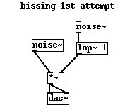
What's wrong with this is the loudness and distribution. To make the example audible I have boosted the level right up, but it's actually way too quiet. But the main problem is that it's still an almost constant noise occasionally getting louder or quieter. To get the hissing to come through in short bursts we need to modify the dynamics of the low frequency modulator and we do this by taking the square to obtain a higher power of the original signal. This makes values close to 1 pass through unaltered but lower values much quieter, basically it expands the dynamic range of the signal. We have to amplify the modulator quite a bit after this to get it back to a sensible level. Have a listen to the next example and compare it side by side with the above example, hear the difference? There are bits where the hissing almost completely disappears leaving silence.
audio .mp3 puredata file .pd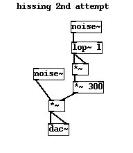
That's almost what we want, but the sound is still a little too regular, so lets increase our expansion to the 4th power by adding another square atom. This time the signal almost vanishes, so we need to boost it somewhat before it goes into the expander chain with a [*~ 10] atom. This value needs to be carefully selected, a 4th power is a large expansion and we can easily end up with a signal that is far too quiet one moment and much too loud the next. The trick is to balance the makeup gain block [*~ 600] with the preamplification, I started at [*~ 2] and [*~ 2000] and adjusted both of the values until I got it sounding right. Also there were a few too many low frequencies in the hissing sound making it sound a bit too "crunchy", the addition of a [hip~ 1000] filter fixes this. Finally notice a cunning optimisation, we can reuse the same noise source to derive both the low frequency modulator and the signal source.
audio .mp3 puredata file .pd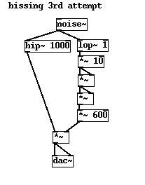
A crackle is a short sharp explosion, often in wood, coal or other solids where a piece of material disintegrates under pressure. Again we start with a noise source. To get a short snap we begin by modulating it with a nice tight envelope, 20ms or so. Try pressing the bang message in the example below. The envelope is produced by using a line segment generator. The message we pass to the [line~] unit says jump immediately to a value of 1, then decay back to zero taking 20ms to do it. Again we use a square atom to modify the output of the line generator, it's doing exactly the same function as the expander we used in the hissing part, but we tend to talk about it in a different way because it's an envelope, ie it's derived from a well defined line function, we say that we are deriving a square law decay, which is a natural envelope found in many real sounds. A linear line function doesn't sound as natural.
audio .mp3 puredata file .pd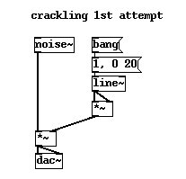
The shortcommings of this patch are that we have to manually fire the envelope generator by pressing the bang. That's no good. We need it to produce intermittent crackles on its own at random times. Also every crackle sounds just the same, we would like a bit of variety in the sounds we get. Look at the diagram below and see how we obtained an automatic random trigger. Again a [lop~ 1] atom gives us a slowly moving random source which we convert to a control signal using the [env~] unit. The output of [env~] is the RMS value of the input signal as a control rate integer, normalised to between 0 and 100. A pair of stream splitters [moses 50]--[moses 51] creates a window of one value right in the middle of the range. Each time the input signal crosses over this value it passes through and triggers the bang, firing the line envelope.
audio .mp3 puredata file .pd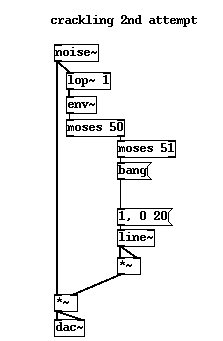
The only thing annoying us now is that these crackles all sound the same. To get a bit of colour into the sound we can do two things. First we can make the decay time of each crackle a little different, second we can make the tone of each crackle unique. That's achieved by adding the [random 30] unit. Unsurprisingly the [random] atom outputs a value between 0 and its argument for each bang message it receives. Scaling this value and passing it to a bandpass filter with a mild resonance adjusts the tone of the noise signal. To get the decay to vary we perform a dollar parameter substitution in the list of values sent to the line envelope with [1, 0 $1( which takes an integer value and substitutes it in the place of $1 before creating and sending the list. Now we have crackles which vary in tone and duration.
audio .mp3 puredata file .pd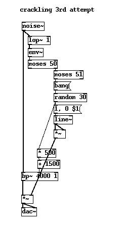
So far so good, but our fire is still missing one essential element, the roaring, lapping sound made by burning gasses. To get a flame sound we begin with guess what.. that's right once again white noise is our friend. The sound of flames burning is a low "woofing" noise so we might expect our next step to be to filter down the white noise to get deep brown or black noise. This is achieved with a [lop~] atom.
audio .mp3 puredata file .pd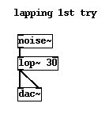
Hmm, that sounds pants. Why? Well the [lop~] on its own is too mild, we have a lot of mid and high frequencies getting through still. Also the tone of a flame has a significant resonance to it. This resonance comes about because the low pressure wave made by the burning gas effectively creates a bubble, or tube of air in which the sound exists. So how do we achieve this? By using a band pass filter with a lot more resonance we get a little closer to the sound we want.
puredata file .pd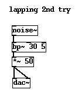
Almost there. But one problem remains. There's a little too much low frequency in the sound and it's a little but too lively in dynamics, sometimes it seems to go over level when played loudly, but when we attenuate it it's too quiet. We can fix both these problems by using a [clip~] atom to cap the level and a [hip~] atom to ease out some of the more troublesome low frequencies. Here's the final take...
audio .mp3 puredata file .pd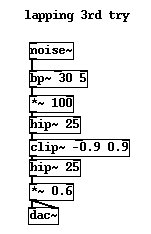
Before we wrap up this part let's make an optimisation. Each of the units to generate lapping, crackling and hissing is based on a noise generator, so can't we just factor it out and use the same the generator for all of them? Interesting question indeed. For some applications this would be a bad idea, it would reduce the degree of variation in the sound because all the units would react in unison to a common signal. But for fire the answer is surprisingly yes, furthermore it's not just an optimisation it's actually an improvement and a very good idea. Why? Because the noises we hear have a common causal linkage. Fire tends to rise up and wane in such a way that crackles, hiss and lapping all move together, so making the noise source a common unit improves the overall sound in a subtle way. Before we can collect all out generators together we need to mix them a bit to balance the relative levels of each part.
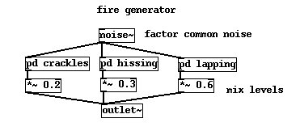
Finally we want a big roaring fire, not the small sound our single fire generator gives us so lets arrange a bunch of them, each with a slightly different EQ into the mix to create a big fire sound like something really burning.
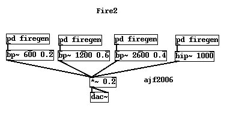
Here's what that sounds like, and here's the final PureData patch. audio .mp3 puredata file .pd
To simulate a really top whack fire we would build unit generators for each of the 9 components discussed in the introduction. But simply having them all running together would be naive. There is a proper causal linkage between events in a fire. To get the fire to build properly we would start with a little crackling and lapping, building up to grand ensemble of boiling and fizzing when the fire is most active. Certain occurrences like hissing and bubbling may go together in groups, a fire in wood is often said to "spit" as oils inside the wood evaporate, this is immediately followed by an upsurge in the amount of flames. Have a go at creating some of the other unit generators. Express your fire process as a state machine, perhaps with distinct levels of combustion in which different generators become active.
Very good. So what do want? A medal!? Don't just stand there gorping soldier, move your ass over to the next tutorial!